Pagebound Books
An independent bookshop on Canongate, Edinburgh. Open since 1998.
42 Canongate
Edinburgh EH8 8BN
 A Field Guide to Small JoysMara LindqvistA Field Guide to Small Joys
A Field Guide to Small JoysMara LindqvistA Field Guide to Small Joys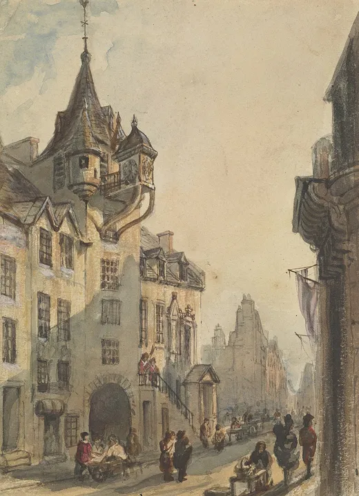
 After the OrbitNgozi Adeyemi-ClarkeAfter the Orbit
After the OrbitNgozi Adeyemi-ClarkeAfter the Orbit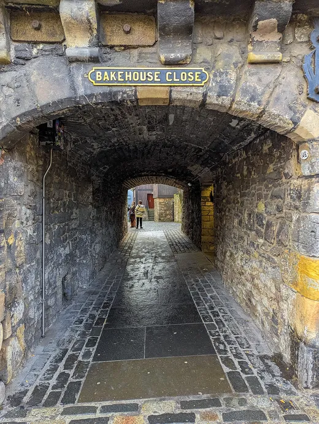

 Small HoursReuben AchterbergSmall Hours
Small HoursReuben AchterbergSmall Hours How to Fix Almost AnythingBill RatcliffeHow to Fix Almost Anything
How to Fix Almost AnythingBill RatcliffeHow to Fix Almost Anything Night Shift at the LighthouseTomasz BrandtNight Shift at the Lighthouse
Night Shift at the LighthouseTomasz BrandtNight Shift at the LighthouseBrowse the whole shop at a glance. Reserve any book for free, and collect it with a cup of tea.
Browse the shelves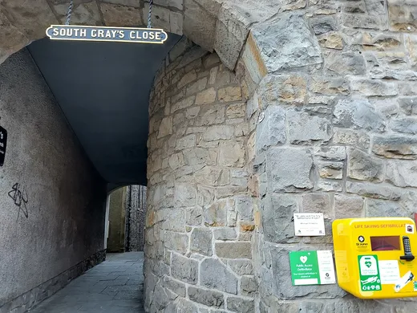
The shop
Pagebound is an independent bookshop at 42 Canongate, on the Royal Mile in Edinburgh.
We opened in 1998 with two shelves and a kettle. We have more shelves now. The kettle is still on.
Every book here has been read by one of us, and the ones we love carry a handwritten note saying why.
Browse the whole shop below, spine out. Reserve anything for free, pick a time, and we will have it waiting by the door.
On the staff shelf
Moira, on A Field Guide to Small JoysThe small-joys shelf lives by the till for a reason. I buy it for people who say they are fine.
Dev, on How to Fix Almost AnythingI fixed a boiler with chapter four. I will not be taking questions about the boiler.
What’s on
October 2026
December 2026
January 2027
Reserve and collect
- Browse
Walk the sheet above, spine out, or sort it by shelf. Everything we stock is in it.
- Read the note
Each book carries a bookseller’s note: what it is, who should have it, why we love it.
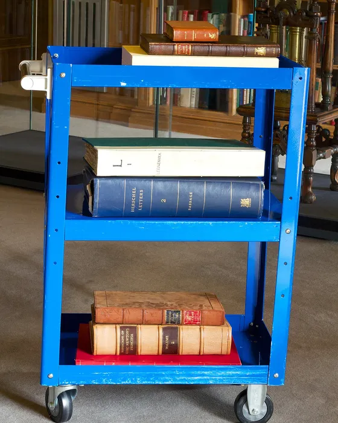
- Reserve
Add it to your basket and reserve it. It is free, and there is no card to enter.
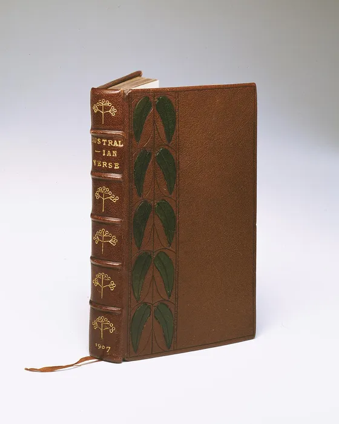
- Pick a time
Choose a day and a slot. We hold your books by the door until you arrive.
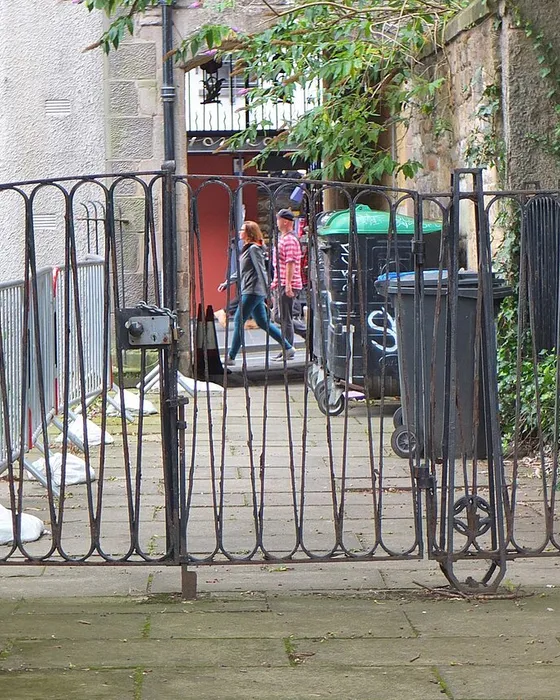
- Collect
Come in from Canongate. Your books are waiting, and the kettle is on.
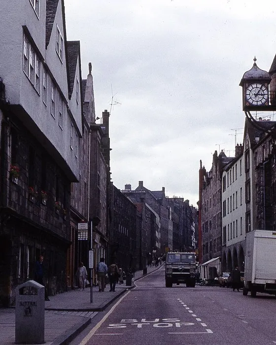
The whole shop
Every book on the shelves this month, and a few of the streets and presses behind them. Sort by shelf.
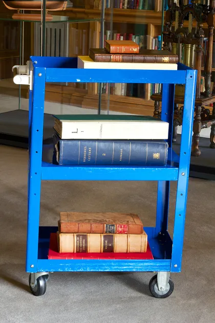
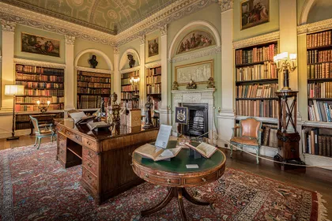
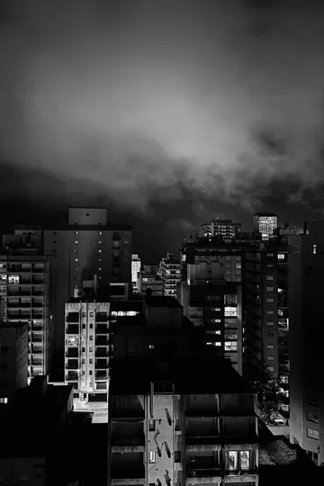
The Quiet HeistDolores Vance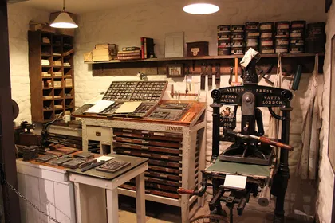
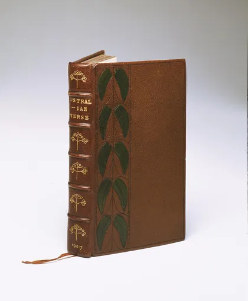
Reserve a book
Reserve a book and we will have it waiting, kettle on.